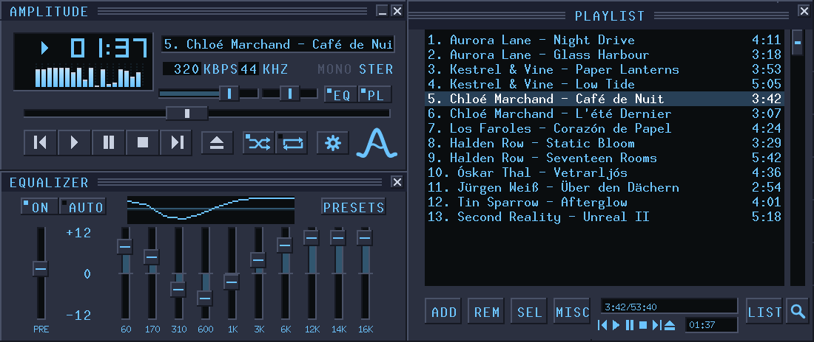
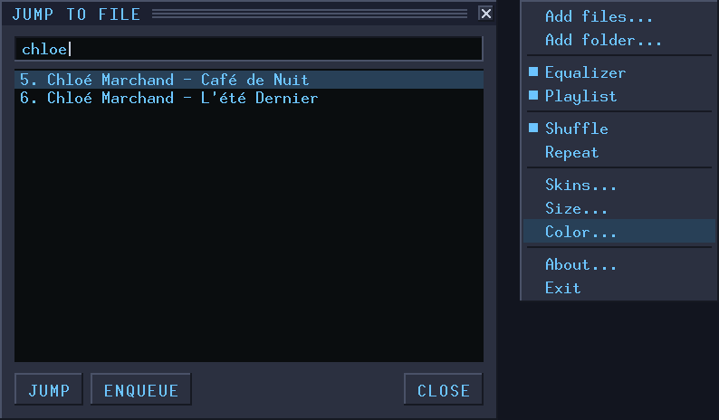
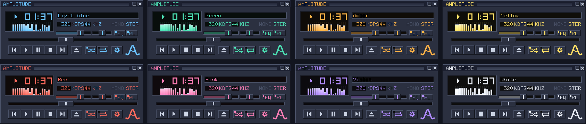

Inspired by the past.
Built for the future.
Amplitude Player is a lightweight, fast audio player for old and new computers. About a megabyte in size, it plays all the common formats, on Windows and Linux.

Why Amplitude Player
Starts at once, stays out of the way, plays your music.
Lightweight
The whole player is about one megabyte, smaller than a single song.
Nothing extra needed
Nothing else to download or set up. Every supported format plays straight away, and the installer is optional on Windows.
Runs where you are
Windows and Linux, 32-bit and 64-bit, on today's computers and on older ones.
Free and open
No accounts, no adverts, no internet connection needed. The source code is open for anyone to read and improve.
Features
A player that just works.
- Open and play. Drop a song, a folder or your whole collection on it and the music starts.
- Everything in view. Player, equaliser and playlist snap together and move as one.
- Sound the way you like it. A 10-band equaliser with ready-made presets.
- Albums as they were meant to be heard, with no gaps between tracks.
- Find any track in seconds. Type a few letters and jump straight to it.
- Playlists in order. Sort, shuffle and save them.
- Sharp on any screen, from an old monitor to 4K.

Your colour
Pick a colour and the whole player follows.

Eight colours are in the menu.
Skins
Compatible with classic skins.
Still have a favourite skin from back then? Amplitude loads classic Winamp 2 skins. Choose "Skins" in the menu and pick the skin file, or simply drop it on the player.
Formats
Plays the formats your collection is in, with nothing extra to install.
- MP3
- FLAC
- Ogg Vorbis
- Opus
- AAC / M4A
- WAV
- MOD
- XM
- S3M
- IT
Download
Version 0.1.0
Windows installer
Adds a Start menu shortcut and can open your audio files with Amplitude. The 32-bit one runs on every Windows.
32-bit 64-bitWindows, portable
Just the player in a zip, no installer. The 32-bit one runs everywhere and is the one for older machines.
32-bit 64-bitThe portable version needs no installation: unzip it and run Amplitude from wherever you like. On Linux, open the downloaded package to install it.
Source
Free software, open to everyone.
Amplitude is released under the GNU General Public License, version 3 or later: you may use it, share it and change it. The complete source code is available, with a guide for developers who want to build it or contribute.